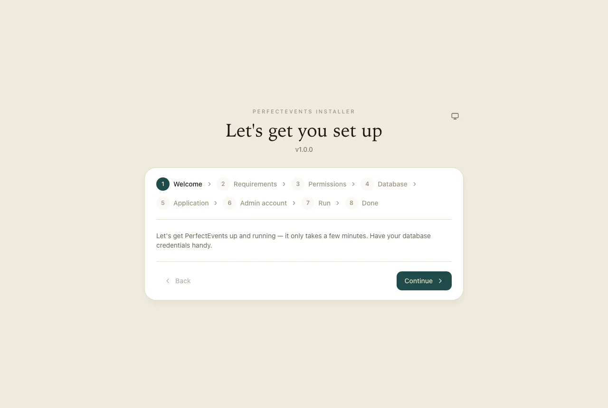
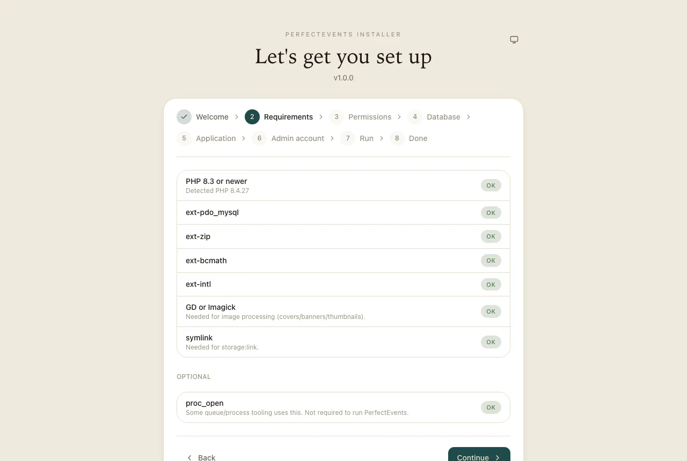
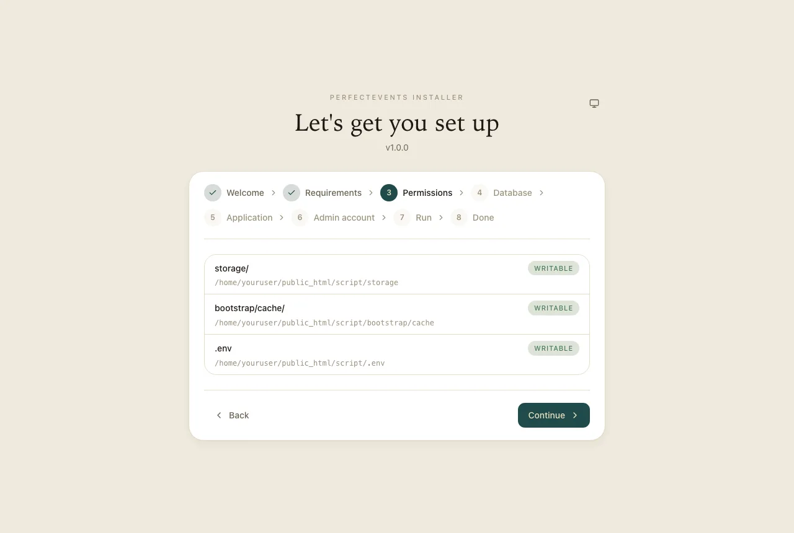
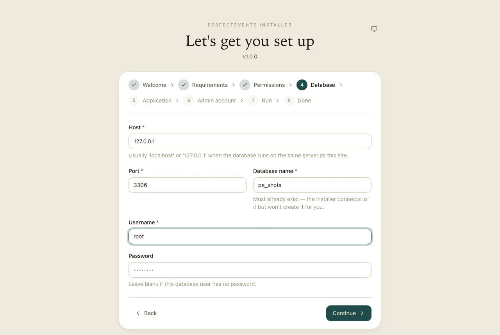
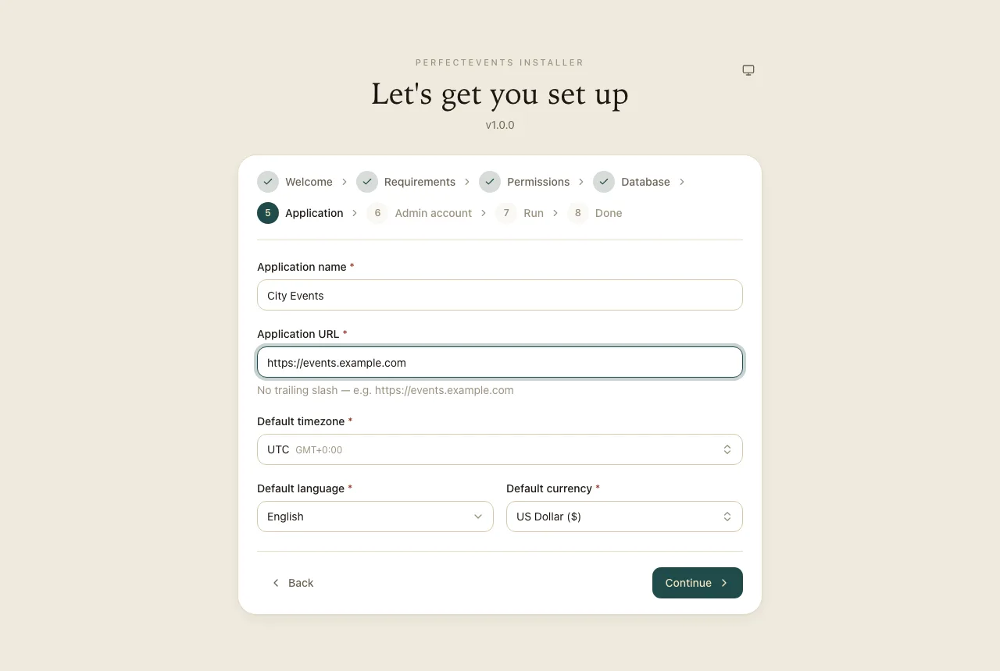
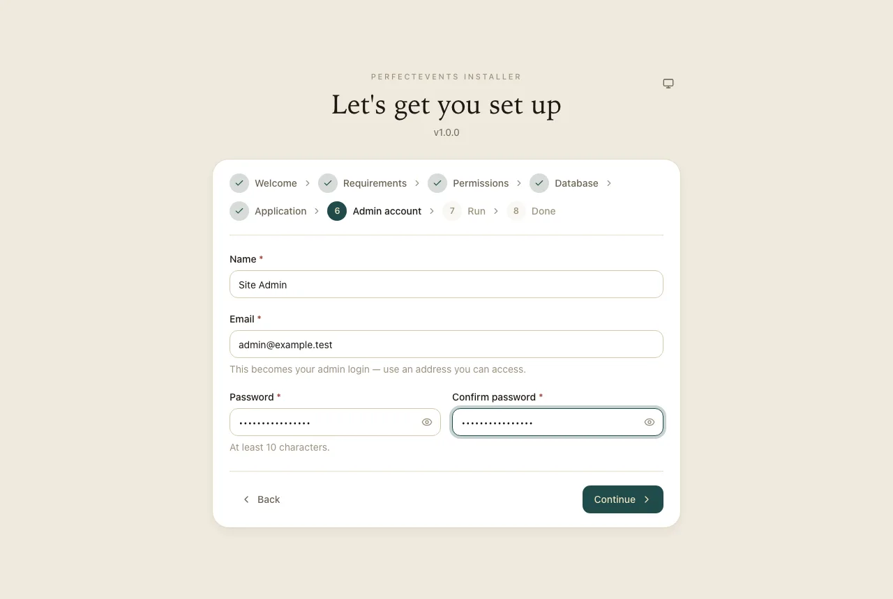
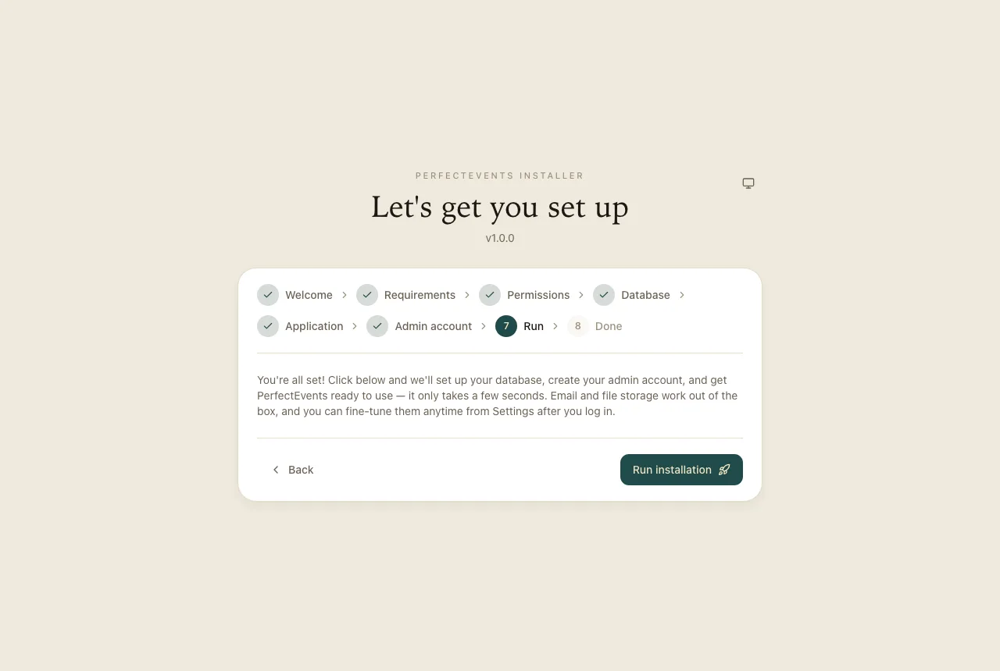
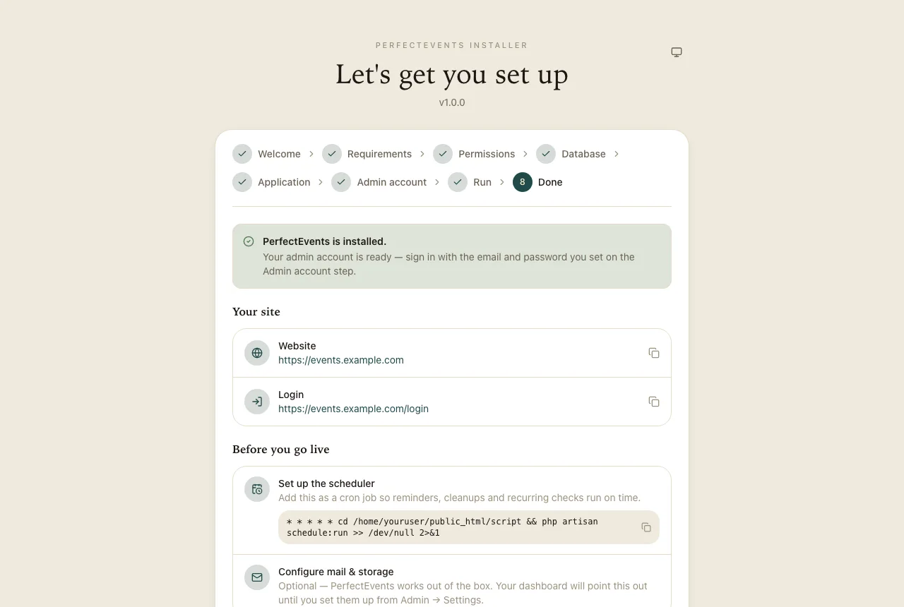

Installation Wizard Walkthrough
Every step of the install wizard, in order, and what it's doing behind the scenes.
Point your domain (or a subdirectory — see Subdirectory
install) at script/public and visit it in a browser. Until the app is installed,
every request redirects to /install; once installed, /install/* stops
existing entirely (404) — there's no separate "delete the installer folder" step to remember.
The wizard is safe to re-run or resume: nothing is written to your real database or .env
until the final "Run" step, and that step itself is idempotent (safe to retry if it fails partway —
migrations skip what's already applied, settings are upserted, not duplicated).
The wizard has eight steps. Each one is shown below as it looks on a fresh install.
1. Welcome
A short intro. Have your database name, username and password ready before you continue.

2. Requirements
A read-only checklist: PHP ≥ 8.3 and the required extensions
(pdo_mysql, mbstring, openssl, curl, zip, fileinfo, bcmath, intl, tokenizer, xml, plus
either GD or Imagick). You can't continue until every required item is
green — see Server requirements if
something's missing. proc_open and symlink are checked too but don't block
you; the wizard copies files instead if symlink() isn't available on your host.

3. Permissions
Checks that storage/, bootstrap/cache/ and .env (or the app
folder, if .env doesn't exist yet) are writable by the web server. If something is red,
set that folder to 775 in your file manager or with chmod, then reload.

4. Database
Host, port, database name, username and password. The database must already exist — create it first in cPanel → MySQL Databases (or your host's equivalent). When you press Continue the wizard opens a test connection; nothing is written yet.

5. Application
Your site name, its full URL (no trailing slash), timezone, default language and default currency. More languages and currencies can be added later from Admin.

6. Admin account
The first admin's name, email and password. This account is created already verified, so you can sign in straight away.

7. Run
Press Run installation. The wizard writes .env, runs the migrations, seeds the
database, applies your language and currency, creates your admin account and links storage. It
usually takes under a minute. Every part is safe to retry if it fails partway.

8. Done
You get your site and login links, plus the exact cron line to copy for your server — set it up now (see Cron & queue workers). Then sign in and continue in the Admin panel.

How "installed" is tracked
Two things both have to be true for the app to consider itself installed: a lock file at
storage/app/installed.json, and a row in the installations table (install date and version). If either is missing, every request
bounces back to the wizard.